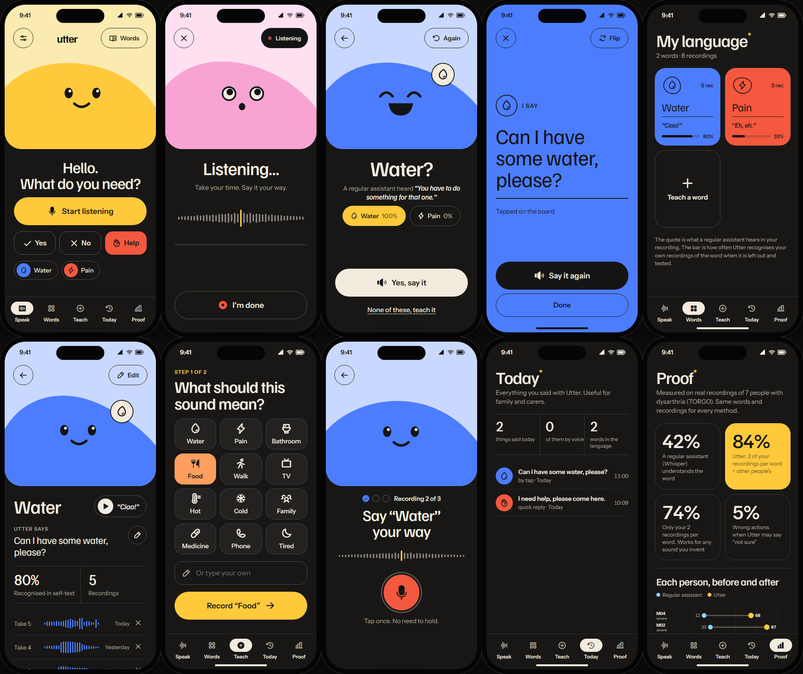

Say it your way.
Voice assistants don't understand people with dysarthria. Utter learns how one person speaks, from three of their own recordings per word, and then speaks the full sentence for them.
Launch video
The whole idea in a minute and a half, with real recordings from the TORGO database.
The problem, measured
After a stroke, or with Parkinson's, ALS or cerebral palsy, speech often becomes slurred and slow, and hands often don't work well either. Voice should be the way in. We tested it on real recordings of single words from people with dysarthria.
of words understood by regular speech recognition (Whisper small)
understood by Utter with 2 of the person's own recordings per word
wrong actions when Utter may say "not sure" and ask again
7 people with dysarthria from the TORGO database, sets of 8 words, recordings the model never heard. Chance is 12.5%.
How it works
The AI is the part that listens. WavLM is a neural network with about 95 million parameters that learned from unlabelled speech what speech sounds like. Utter uses it for few-shot learning: nothing is retrained, so two or three recordings of a word are enough.

It runs, on real voices
A real screenshot. On the left, the app has learned 8 words of a real person with severe dysarthria and is hearing recordings it never heard before, next to a regular assistant. On the right, the model shows its work for every recording.

Teach
Pick a meaning, say your sound three times. It doesn't have to be a real word.
Speak
Say it. Utter shows its guess, and after you confirm, it says the whole sentence aloud.
Not sure
When two words are too close, Utter asks again. A wrong action is worse than no action.

Results
Share of words recognised correctly, averaged over 7 people with dysarthria (50 random sets of 8 words each).
With "not sure" on: 71% correct, 24% asks again, 5% wrong. With shuffled labels accuracy falls to 10%, so nothing leaks from the test data.
Each person, in the running app
| Person | Dysarthria | Whisper | Utter |
|---|---|---|---|
| F01 | severe | 11% | 75% |
| M01 | severe | 17% | 87% |
| M02 | severe | 24% | 73% |
| M04 | severe | 14% | 56% |
| M05 | moderate to severe | 46% | 74% |
| F03 | moderate | 50% | 57% |
| F04 | mild | 59% | 77% |
| M03 | mild | 70% | 91% |
Top guess right on 508 unheard recordings, the person's own recordings only (2 per word, 1 for F01). This is the harder setting the app uses, so the mean is 74%, not 84%.
Real examples, side by side
| Person said | Whisper heard | Utter |
|---|---|---|
| sigh (M02) | "Five." ✗ | sigh ✓ |
| read (F01) | "Wee" ✗ | read ✓ |
| spark (M01) | "I" ✗ | spark ✓ |
| know (M04) | "No." ✓ | knew ✗ |
| storm (F01) | "Bye." ✗ | warm ✗ |
Where it fails: words that sound alike (know and knew, storm and warm). For M04 the app asks again for 82% of recordings instead of acting.
Honest limits
- 8 people with dysarthria (cerebral palsy or ALS), English, single words, lab recordings.
- For common English words, other people's recordings alone (79%) beat the person's own two (74%). Personal recordings matter most for the hardest speakers and for sounds a person invents.
- The app was tested on TORGO recordings and by us, not yet by people with dysarthria.
- Utter is a prototype built in one weekend. It is not a medical device and not medical advice.
Made by
Jonáš, Tomáš and Benjamín, for the Veritas AI International High School Hackathon 2026, track AI + Languages.
Data: TORGO database of dysarthric speech (Rudzicz, Namasivam & Wolff, 2012). Models: WavLM Base+ (Microsoft) and Whisper small (OpenAI). AI tools used while building: Claude Code, Claude, ChatGPT, Gemini and Perplexity.